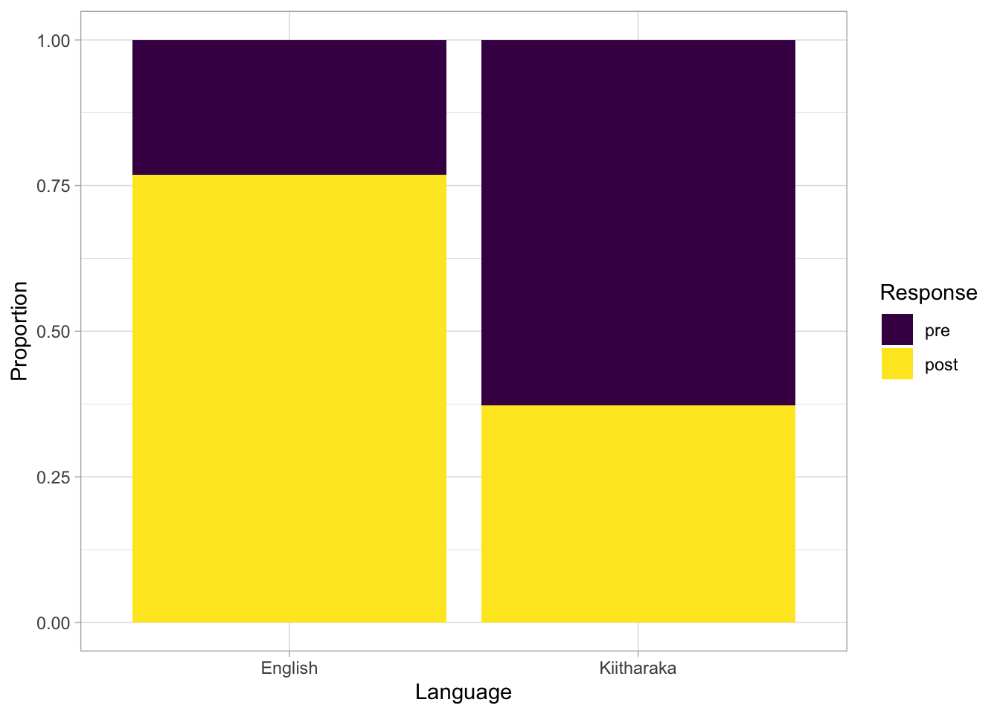
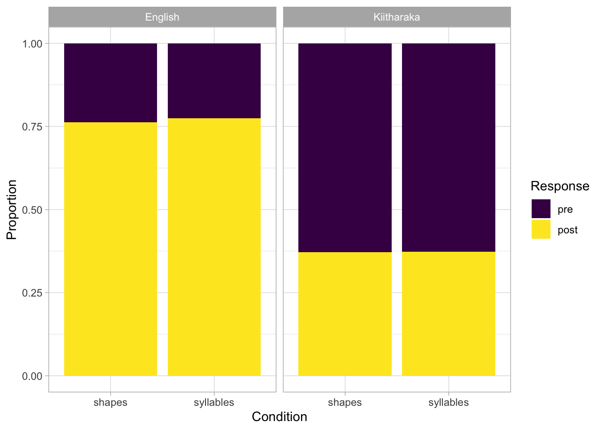
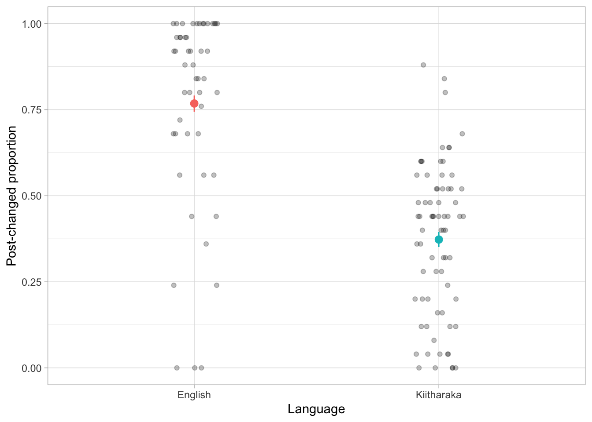
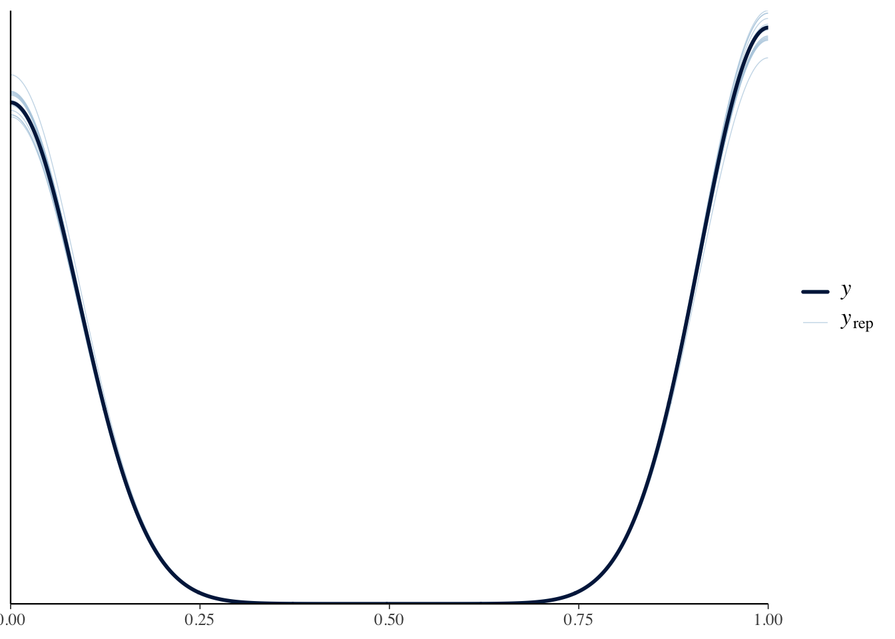
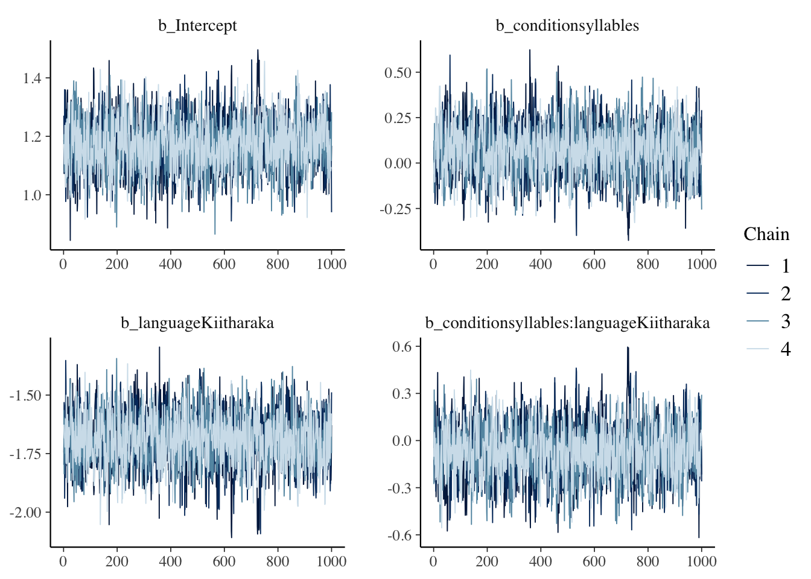
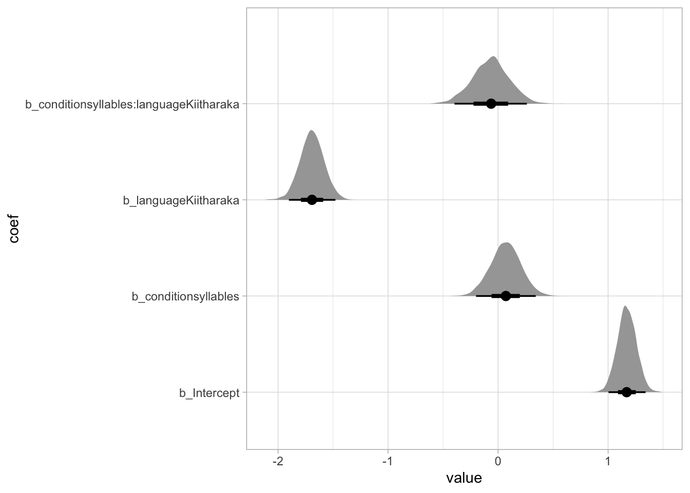
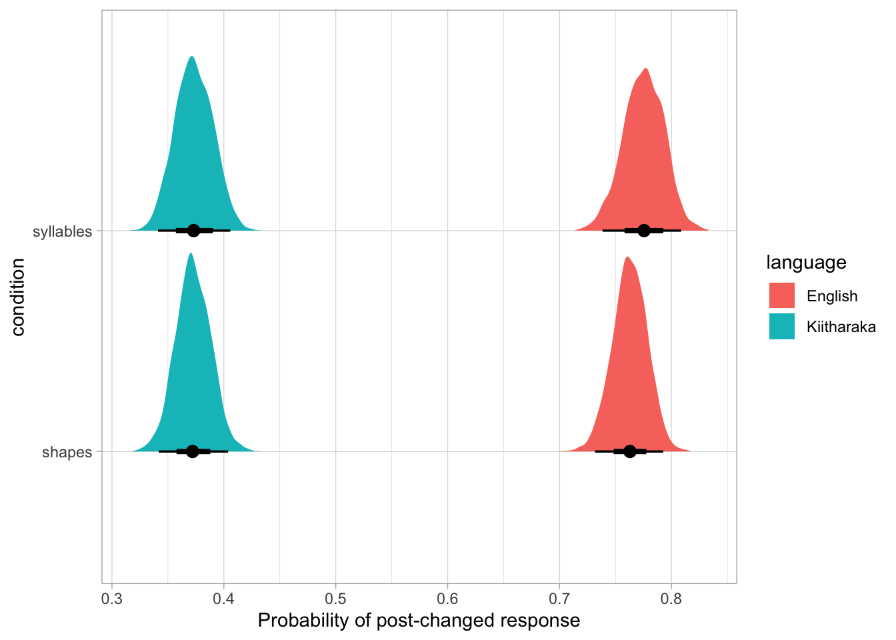
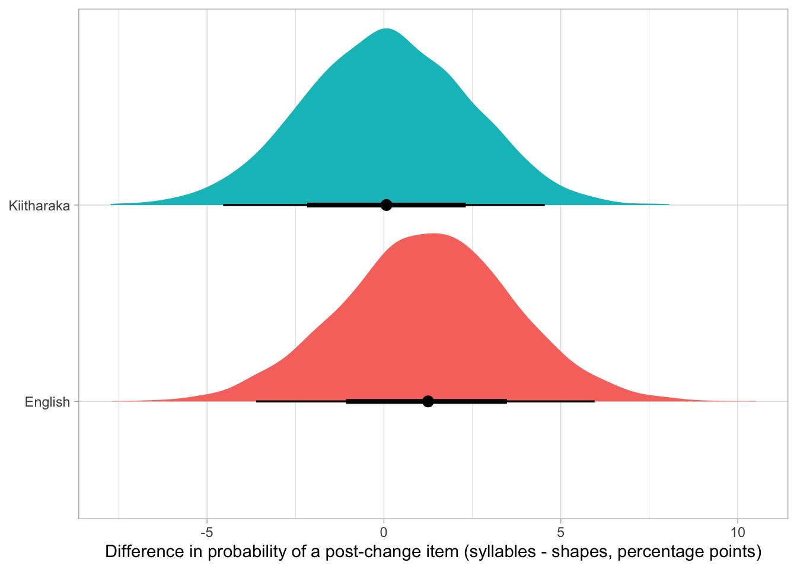
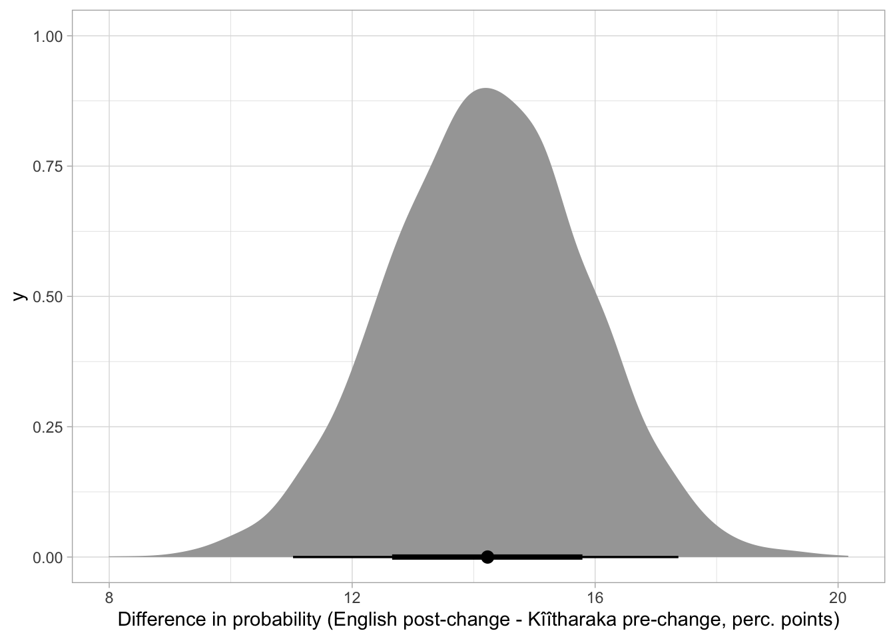

library(tidyverse)
theme_set(theme_light())
library(brms)
library(bayesplot)
library(posterior)
library(ggdist)
library(tidybayes)QML 2026 Data analysis report
| Group Project title | A Bayesian re-analysis of suffixing preference in English and Kîîtharaka |
| Group members | MEMBER 1, MEMBER 2, MEMBER 3 (use EXAM NUMBERS) |
1 Background
This document reports a re-analysis of the data in Martin and Culbertson (2020). The original study investigated the hypothesis that humans are biased towards considering sequences that differ at the end as more similar than sequences that differ at the beginning. This hypothesis has been linked to the typological preference for suffixation over prefixation in morphology across the languages of the world. The study assessed the preference for post-changed sequences vs pre-changed sequences in speakers of English (Indo-European, a suffixing language) and of Kîîtharaka (Bantu, a prefixing language).
The study used two types of stimuli: sequences of syllables and sequences of visual shapes. The inclusion of both stimulus types was motivated by the distinction between domain-general perceptual biases and biases arising from language experience. If the tendency to attend more to sequence beginnings reflects a general property of human perception, it should be observed across both linguistic and non-linguistic stimuli. Conversely, if the preference is shaped by experience with the structure of one’s native language, it may reflect language-specific learning that can subsequently generalise to other domains. Accordingly, the comparison between syllable and shape stimuli allowed the authors to investigate whether the preference for post-changed sequences extends beyond linguistic material.
Participants were presented with a target sequence followed by two comparison sequences: a pre-changed sequence, which differed from the target in its initial element, and a post-changed sequence, which differed in its final element. Their task was to indicate which of the two comparison sequences was more similar to the target. This procedure was repeated using both syllable and shape sequences.
1.1 Research Questions/Hypotheses
If there is a strong cognitive preference for post-changed sequences, then we should observe such preference independent of linguistic experience (suffixing vs prefixing language) and stimulus type (shape vs syllables). Based on these premises, we will assess the following hypotheses:
- H1: English and Kîîtharaka speakers alike prefer post-changed sequences over pre-changed sequences.
- H2: Condition (shape vs syllables) doesn’t elicit a different preference in both languages.
It should be noted that H2 is briefly mentioned in the original study in the Results section but as far as we can tell it is not addressed in depth in the previous sections.
2 Methods
Since we are re-analysing pre-existing data, we focus on the statistical analysis (see Background section for a summary of the procedure and materials of the original study). To address the research hypotheses, we will fit a Bayesian regression model to the response (pre-changed vs post-changed) as a function of language in interaction with condition (shape vs syllables).
The critical quantities we will use to address the RHs are:
- H1. Difference in post-changed preference between English and Kîîtharaka (averaged across conditions).
- H2. Difference in post-changed preference between syllables and shape condition (separate for each language separately).
2.1 Open Research statement
The Research Compendium of this study (including data and code) is available at https://github.com/uoelel/qml-report. The Compendium is structured thus:
The
datafolder contains the data from Martin and Culbertson (2020) indata_anonymizedand acachefolder which contains the cached output of the brms model we fit below.data_anonymizedhas two files with the experimental data, one for English and one for Kîîtharaka. We will read these files and merge them into a single data frame below.
The analysis file is
submission.qmd. Running the code in this file will reproduce the analysis (note that the Bayesian model out is cached, so the Bayesian model will not be fit again when running the code).
3 Data
3.1 Read and process the data
The original data is split into two different files, one per language, so we bind them into a single tibble. We also select only the critical trials (i.e. the “post-pre” trials).
suff_pref_en <- read_csv("data/data_anonymized/English_anon.csv") |>
mutate(language = "English")
suff_pref_ki <- read_csv("data/data_anonymized/Kiitharaka_anon.csv") |>
mutate(language = "Kiitharaka")
suff_pref <- bind_rows(suff_pref_en, suff_pref_ki) |>
filter(trial_type == "post-pre")Table 1 shows a preview of the data. Post-changed items were coded as 1 in the accuracy column.
suff_pref |>
select(subjID, language, condition, target, accuracy) |>
head(10) |>
knitr::kable()| subjID | language | condition | target | accuracy |
|---|---|---|---|---|
| 2LF13ZN0 | English | shapes | cross-right | 1 |
| 2LF13ZN0 | English | shapes | heart-square | 1 |
| 2LF13ZN0 | English | shapes | cross-ellipse | 1 |
| 2LF13ZN0 | English | shapes | right-semicircle | 1 |
| 2LF13ZN0 | English | shapes | star-trefoil | 1 |
| 2LF13ZN0 | English | shapes | heart-octagon | 1 |
| 2LF13ZN0 | English | shapes | circle-square | 1 |
| 2LF13ZN0 | English | shapes | kite-trapeze | 1 |
| 2LF13ZN0 | English | shapes | diamond-semicircle | 1 |
| 2LF13ZN0 | English | shapes | kite-octagon | 1 |
We check accuracy is correctly coded with 0 and 1.
unique(suff_pref$accuracy)[1] 1 0We create a new column called pre_post with pre for a pre-changed response and post for a post-changed response.
suff_pref <- suff_pref |>
mutate(
pre_post = ifelse(accuracy == 0, "pre", "post"),
pre_post = factor(pre_post, levels = c("pre", "post"))
)
table(suff_pref$pre_post)
pre post
1419 1631 Now condition has shapes for both English and Kîîtharaka, but the language condition was coded as syllables in English and words in Kîîtharaka, so we change words to syllables.
suff_pref <- suff_pref |>
mutate(
condition = ifelse(condition == "words", "syllables", condition)
)
table(suff_pref$condition, suff_pref$language)
English Kiitharaka
shapes 725 975
syllables 525 8253.2 Descriptive statistics
Let’s get the number of participants per language.
suff_pref |>
distinct(subjID, language) |>
count(language)# A tibble: 2 × 2
language n
<chr> <int>
1 English 50
2 Kiitharaka 72And the number of trials per language.
suff_pref |>
count(language)# A tibble: 2 × 2
language n
<chr> <int>
1 English 1250
2 Kiitharaka 1800In the following code, we calculate the proportion of pre-changed responses and post-changed responses within each language.
suff_pref |>
count(language, pre_post) |>
group_by(language) |>
mutate(
tot = sum(n),
prop = round(n / tot, 2)
)# A tibble: 4 × 5
# Groups: language [2]
language pre_post n tot prop
<chr> <fct> <int> <int> <dbl>
1 English pre 290 1250 0.23
2 English post 960 1250 0.77
3 Kiitharaka pre 1129 1800 0.63
4 Kiitharaka post 671 1800 0.37Table 2 shows the number of post-changed responses (out of the total responses for that cell) and the corresponding proportion, for each language and condition. The raw proportion indicate a preference for post-changed responses in English and a preference for pre-changed responses in Kîîtharaka.
suff_pref |>
count(language, condition, pre_post) |>
group_by(language, condition) |>
mutate(
tot = sum(n),
prop = round(n / tot, 2)
) |>
filter(pre_post == "post") |>
mutate(
value = paste0(n, "/", tot, " (", prop, ")")
) |>
select(language, condition, value) |>
pivot_wider(names_from = condition, values_from = value) |>
knitr::kable()| language | shapes | syllables |
|---|---|---|
| English | 553/725 (0.76) | 407/525 (0.78) |
| Kiitharaka | 363/975 (0.37) | 308/825 (0.37) |
Figure 1 illustrates the proportion of responses (pre- or post-changed) in the two languages as a stacked bar chart. The x-axis indicates the language, while the y-axis the proportion of responses. The fill indicate pre- (purple) and post-changed (yellow) responses.
suff_pref |>
ggplot(aes(language, fill = pre_post)) +
geom_bar(position = "fill") +
labs(
x = "Language", y = "Proportion", fill = "Response"
) +
scale_fill_viridis_d()
Figure 2 is like Figure 1 but it splits the data by language and condition. The proportions within language are very similar across condition, as suggested by the summary measures above.
suff_pref |>
ggplot(aes(condition, fill = pre_post)) +
geom_bar(position = "fill") +
labs(
x = "Condition", y = "Proportion", fill = "Response"
) +
scale_fill_viridis_d() +
facet_grid(cols = vars(language))
Figure 3 is a scatter plot of by-participant proportions of post-changed responses (each grey dot represents one participant), split by language. In colour, the overall proportion of post-changed responses across all participants with 95% bootstrapped CIs.
subj_mean <- suff_pref |>
group_by(subjID, language) |>
summarise(
mean = mean(accuracy),
.groups = "drop"
)
suff_pref |>
ggplot(aes(language, accuracy)) +
geom_jitter(
data = subj_mean,
aes(y = mean),
alpha = 0.25,
position = position_jitter(width = 0.1, height = 0, seed = 3457),
) +
stat_summary(
aes(colour = language),
fun.data = "mean_cl_boot",
size = 0.5
) +
labs(
x = "Language", y = "Post-changed proportion"
) +
theme(legend.position = "none")
There is a certain degree of variability between participants in both languages. Most English participants have a proportion of post-changed responses above 50%, although a few fall below 50% with three as low as 0%. In contrast, most Kîîtharaka participants are below 50%, with some above it.
4 Regression modelling
We will fit a Bayesian regression model with brms (Bürkner 2017) in R (R Core Team 2026). The outcome is the pre vs post response (with post set as the second level), modelled with a Bernoulli family. As predictors, we include condition (shapes vs syllables) and language (English vs Kîîtharaka), and an interaction between the two. Both predictors are categorical and coded using the default treatment contrasts with the reference level set to shapes and English respectively. We fit the model with 4 chains and 2000 iteration per chain, of which half for warm-up.
post_bm <- brm(
pre_post ~ condition * language,
data = suff_pref,
family = bernoulli,
cores = 4,
seed = 15243,
file = "data/cache/post_bm"
)The model converged. \(\hat{R}\) values are equal to 1, Bulk and and tail ESS are sufficient.
summary(post_bm, prob = 0.8) Family: bernoulli
Links: mu = logit
Formula: pre_post ~ condition * language
Data: suff_pref (Number of observations: 3050)
Draws: 4 chains, each with iter = 2000; warmup = 1000; thin = 1;
total post-warmup draws = 4000
Regression Coefficients:
Estimate Est.Error l-80% CI u-80% CI Rhat
Intercept 1.17 0.09 1.06 1.28 1.00
conditionsyllables 0.07 0.14 -0.11 0.24 1.00
languageKiitharaka -1.69 0.11 -1.83 -1.55 1.00
conditionsyllables:languageKiitharaka -0.07 0.17 -0.28 0.15 1.00
Bulk_ESS Tail_ESS
Intercept 1945 2006
conditionsyllables 1756 2109
languageKiitharaka 1916 1950
conditionsyllables:languageKiitharaka 1542 1705
Draws were sampled using sampling(NUTS). For each parameter, Bulk_ESS
and Tail_ESS are effective sample size measures, and Rhat is the potential
scale reduction factor on split chains (at convergence, Rhat = 1).Inspection of the posterior predictive check plot suggests good reconstruction of the empirical distribution of the data.
pp_check(post_bm, ndraws = 15)
The trace plots of the model coefficients are good.
mcmc_trace(post_bm, regex_pars = "^b_")
Let’s extract the model draws. We also make a longer version for plotting.
post_draws <- as_draws_df(post_bm)
post_draws_long <- post_draws |>
select(b_Intercept:`b_conditionsyllables:languageKiitharaka`) |>
pivot_longer(everything(), names_to = "coef")Warning: Dropping 'draws_df' class as required metadata was removed.Figure 4 shows density plots of the posterior draws of the model coefficients:
b_Intercept: log-odds of post-changed responses in English and the shapes condition.b_conditionsyllables: difference between the syllables and shapes condition in English.b_languageKiitharaka: difference between Kîîtharaka and English in the shapes condition.b_conditionsyllables:languageKiitharaka: adjustment to the main effects of language and condition for Kîîtharaka in the syllables condition.
post_draws_long |>
mutate(coef = factor(coef, levels = c("b_Intercept", "b_conditionsyllables", "b_languageKiitharaka", "b_conditionsyllables:languageKiitharaka"))) |>
ggplot(aes(value, coef)) +
stat_halfeye()
Table 3 reports summary measures (mean, SD, 80% and 70% CrIs) of the posterior draws of the regression coefficients.
fixef(post_bm, probs = c(0.1, 0.9, 0.15, 0.85)) |>
round(2) |>
knitr::kable(
col.names = c("mean", "SD", "l-80%", "u-80%", "l-70%", "u-70%")
)| mean | SD | l-80% | u-80% | l-70% | u-70% | |
|---|---|---|---|---|---|---|
| Intercept | 1.17 | 0.09 | 1.06 | 1.28 | 1.08 | 1.26 |
| conditionsyllables | 0.07 | 0.14 | -0.11 | 0.24 | -0.07 | 0.21 |
| languageKiitharaka | -1.69 | 0.11 | -1.83 | -1.55 | -1.80 | -1.58 |
| conditionsyllables:languageKiitharaka | -0.07 | 0.17 | -0.28 | 0.15 | -0.24 | 0.11 |
Let’s calculate the posterior draws of expected values for further inspection.
grid <- expand_grid(
condition = unique(suff_pref$condition),
language = unique(suff_pref$language)
)
post_epred <- epred_draws(post_bm, grid)Figure 5 shows density plots of the posterior draws of the expected value for the probability of post-changed responses. The densities are split by condition (x-axis) and language (red for English and blue for Kîîtharaka).
post_epred |>
ggplot(aes(.epred, condition, fill = language)) +
stat_halfeye() +
labs(
x = "Probability of post-changed response"
)
Overall, there is a preference for post-changed responses in English participants and a preference for pre-changed responses in Kîîtharaka participants. To more directly address H1, which is about comparing the two languages, independent of condition, we need to average across conditions. Averaging should be done at the level of the linear predictor, rather than with expected values, so we get the linear predictor in the following code.
post_linpred <- linpred_draws(post_bm, grid)Let’s pivot the resulting tibble to average across conditions and get the expected probability of post-changed items in the two languages and the probability of pre-changed items in Kîîtharaka.
post_linpred_wide <- post_linpred |>
unite("lang_cond", language, condition) |>
ungroup() |>
select(-.row) |>
pivot_wider(names_from = lang_cond, values_from = .linpred) |>
mutate(
E_mean = (English_shapes + English_syllables) / 2,
K_mean = (Kiitharaka_shapes + Kiitharaka_syllables) / 2,
E_post_p = plogis(E_mean),
K_post_p = plogis(K_mean),
K_pre_p = 1 - K_post_p
)We can now get the 80% CrIs.
quantile2(post_linpred_wide$E_post_p, probs = c(0.1, 0.9)) |> round(2) q10 q90
0.75 0.78 quantile2(post_linpred_wide$K_post_p, probs = c(0.1, 0.9)) |> round(2) q10 q90
0.36 0.39 quantile2(post_linpred_wide$K_pre_p, probs = c(0.1, 0.9)) |> round(2) q10 q90
0.61 0.64 Let’s investigate further the difference in probability of post-changed responses in the two conditions, shapes and syllables (H2). We first pivot the expected values tibble so that we can then calculate differences between conditions for each language (these are the columns named E_syl_sh and K_syl_sh).
post_epred_wide <- post_epred |>
unite("lang_cond", language, condition) |>
ungroup() |>
select(-.row) |>
pivot_wider(names_from = lang_cond, values_from = .epred)
post_epred_wide <- post_epred_wide |>
mutate(
E_syl_sh = English_syllables - English_shapes,
K_syl_sh = Kiitharaka_syllables - Kiitharaka_shapes
)Figure 6 plots the posterior draws of the difference in the probability of a post-changed item between the syllables and shapes conditions, in percentage points, for each language. In general the difference spans values between -5 to 5 percentage points.
post_epred_wide |>
select("English" = E_syl_sh, "Kiitharaka" = K_syl_sh) |>
pivot_longer(everything()) |>
ggplot(aes(value * 100, name, fill = name)) +
stat_halfeye() +
labs(
x = "Difference in probability of a post-change item (syllables - shapes, percentage points)",
y = NULL
) +
theme(legend.position = "none")
Let’s calculate 80% CrIs.
(quantile2(post_epred_wide$E_syl_sh, probs = c(0.1, 0.9)) * 100) |> round()q10 q90
-2 4 (quantile2(post_epred_wide$K_syl_sh, probs = c(0.1, 0.9)) * 100) |> round()q10 q90
-3 3 For English, the 80% CrI indicates an 80% probability for the difference to be between -2 and +4 percentage points. In Kîîtharaka, the 80% CrI is [-3, +3]. In both languages, the models suggests a small positive or negative difference or no difference at all. Given the uncertainty, we can’t argue for or against this difference being different in the two languages.
Another useful comparison is between the post-changed preference in English vs the pre-changed preference in Kîîtharaka. We do this in the following code.
post_linpred_wide <- post_linpred_wide |>
mutate(
E_K_p = E_post_p - K_pre_p
)Positive values of E_K_p would indicate a stronger post-change preference in English than pre-change preference in Kîîtharaka. Negative values of E_K_p would indicate a stronger pre-change preference in Kîîtharaka than post-change preference in English. Figure 7 shows the density of the posterior draws of the difference between the probability of post-change items in English and the probability of pre-change items in Kîîtharaka, in percentage points
post_linpred_wide |>
ggplot(aes(E_K_p * 100)) +
stat_halfeye() +
labs(
x = "Difference in probability (English post-change - Kîîtharaka pre-change, perc. points)"
)
The distribution covers positive values, thus indicating that the post-change preference in English is stronger than the pre-change preference in Kîîtharaka. We get the 80% CrIs to quantify how stronger.
quantile2(post_linpred_wide$E_K_p * 100, probs = c(0.1, 0.9)) |> round()q10 q90
12 16 The 80% CrI is [12, 16] percentage points. In other words, the English post-change probability in English is about 12-16 percentage points higher than the pre-change probability in Kîîtharaka. If we interpret the pre/post-change probability as preference, then the model suggests a stronger preference for one of the two change locations in English than in Kîîtharaka.
5 Discussion
Research hypotheses (repeated from above):
- H1: English and Kîîtharaka speakers alike prefer post-changed sequences over pre-changed sequences.
- H2: Condition (shape vs syllables) doesn’t elicit a different preference in both languages.
The results of our re-analysis are generally in line with the conclusions drawn by the authors of the original study (Martin and Culbertson 2020). The results regarding H1 are quite clear, and match the original paper: English participants showed a preference for post-changed items (80% CrI of post-changed probability [0.75, 0.78]) while Kîîtharaka participants showed a preference of pre-changed items (80% CrI of pre-changed probability [0.61, 0.64]). However there are some differences. As far as H2 is concerned, the original authors conclude that condition (shapes vs syllables) elicits similar preferences in both languages, however our reported CrIs span a range from -3 to +4 percentage points ([-2, +4] in English, [-3, +3] in Kîîtharaka). We agree that even a 4 point difference is small, but whether it is irrelevant to the questions at hand we can’t confidently say. Moreover, given that the CrIs span negative and positive values, we refrain for arguing for or against an effect of condition and a difference in effect between the two languages.
Moreover, we compared the post-change preference in English with the pre-change preference in Kîîtharaka and we found that the 80% CrI of the difference between the two is [12, 16] percentage points. In other words, while indeed the two languages show opposite preferences in line with their affixation nature (English being a suffixing language and Kîîtharaka being a prefixing language), the preference is appreciably stronger in English than in Kîîtharaka. This difference should be addressed in the future.
6 References
Bürkner, Paul-Christian. 2017. “brms: An R Package for Bayesian Multilevel Models Using Stan.” Journal of Statistical Software 80 (1): 1–28. https://doi.org/10.18637/jss.v080.i01.
Martin, Alexander, and Jennifer Culbertson. 2020. “Revisiting the Suffixing Preference: Native-Language Affixation Patterns Influence Perception of Sequences.” Psychological Science 31 (9): 1107–16. https://doi.org/10.1177/0956797620931108.
R Core Team. 2026. R: A Language and Environment for Statistical Computing. R Foundation for Statistical Computing. https://doi.org/10.32614/R.manuals.